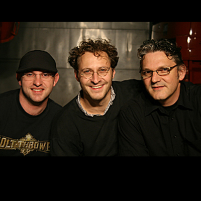

Über mich
Michael Bösch, geboren am 1. Oktober 1976, ist ein vielseitiger Schweizer Musiker aus Rapperswil. Er entstammt der berühmten Urnäscher Alder-Dynastie, einer Familie mit tief verwurzelter musikalischer Tradition.
Schon als Vierjähriger wusste er, dass er Geige spielen wollte. Mit sechs Jahren erhielt er von seinem Grossvater Ueli Alder seine erste Geige geschenkt. Von Beginn an erhielt er klassischen Violinunterricht, der ihm eine solide musikalische Grundlage vermittelte.
Mit 18 Jahren stieg er beim legendären Volksmusik-Ensemble Alderbuebe ein. Seither hat Michael Bösch mit den Alderbuebe hunderte von Konzerten auf der ganzen Welt gespielt. Er beherrscht rund 300 Stücke auswendig, improvisiert aber bei jedem Auftritt individuell.
Steckbrief
- Jahrgang: 1976
- Instrument: Geige
- Wohnort: Rapperswil & Lachen
- Familie: Verheiratet mit Annika, 1 Sohn (Vitus, 2-jährig)
- Beruf: Musiker & Elektroniker (60%)
- Hobbys: Musik, Familie, Biken, Wandern
- Lieblingsmusik: ELP, Lightnin’ Hopkins, Hujässler
- Lieblingsorte: Volksmusik-Festival, Giessifest, «Bären» & Schlossbadi
Lebenslauf
Musikalischer Lebenslauf
Musikalische Anfänge
Schon als Vierjähriger wusste der kleine Michi, dass er Geige spielen wollte. Mit sechs Jahren erhielt er von seinem Grossvater Ueli Alder seine erste Geige geschenkt – ein prägendes Geschenk. Von Beginn an erhielt er klassischen Violinunterricht, der ihm eine solide musikalische Grundlage vermittelte.
Die Alderbuebe
Mit 18 Jahren änderte sich alles: Michael stieg beim legendären Volksmusik-Ensemble Alderbuebe ein. Seither hat er hunderte von Konzerten auf der ganzen Welt gespielt. Heute beherrscht er rund 300 Stücke auswendig, improvisiert aber bei jedem Auftritt individuell: «Das ist für mich gerade das Schöne an der Appenzeller Volksmusik: dass ich das Gefühl habe, zu ihr etwas beitragen, sie verschönern zu können.»
Musikalische Vielfalt
Michael Bösch beschäftigt sich auch mit stilistisch ganz unterschiedlichen Projekten. Er spielt in Formationen wie dem Trio Item, Schueflade, Folk Import und Caravan of Fools. Zudem ist er als gefragter Gastmusiker auf vielen CDs und Bühnen zu hören und komponiert Theatermusik, beispielsweise für das Osterspiel in Muri.
Engagement für die Volksmusik
Neben seiner aktiven Karriere engagiert sich Michael auch als Organisator. Er war massgeblich am Schweizer Volksmusik-Festival 2014 in Rapperswil beteiligt und setzt sich dafür ein, dass die Volksmusik einen festen Stellenwert in der Kulturszene behält.
Musikalische Projekte
Alderbuebe
Legendäres Volksmusik-Ensemble mit weltweiter Konzerttätigkeit. Mitglied seit 1994.
Trio Item
Internationale Volksmusik verknüpft mit Jazz-Elementen und Tango-Rhythmen.
Schueflade
Experimentelles Projekt mit wilden Taktwechseln und Synthesizer-Klängen.
Folk Import
Spannende Crossover-Projekte zwischen verschiedenen Volksmusiktraditionen.
Theatermusik
Kompositionen für verschiedene Bühnenwerke, u.a. das Osterspiel in Muri.
Caravan of Fools
Musikalische Entdeckungsreisen durch verschiedene Stilrichtungen.
Galerie
.jpeg)
.jpeg)
.jpeg)
.jpeg)

.jpeg)
.jpeg)
.jpeg)
Kontakt
Email: michael@boesch.ch
Telefon: +41 78 267 85 92